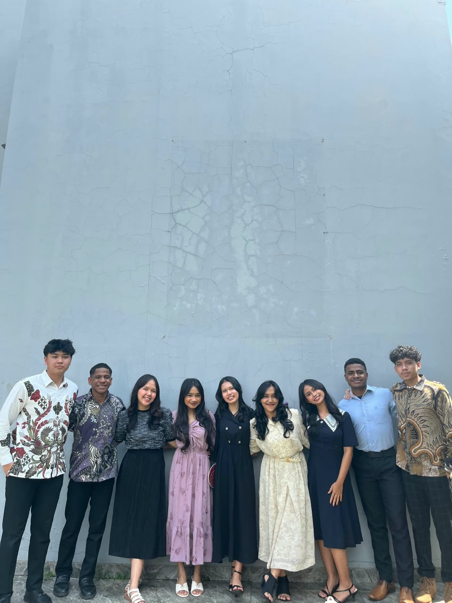
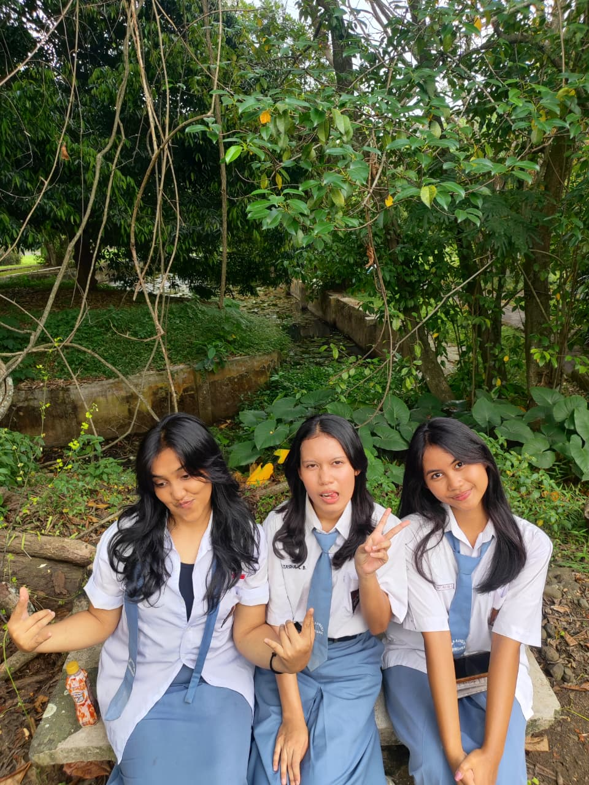
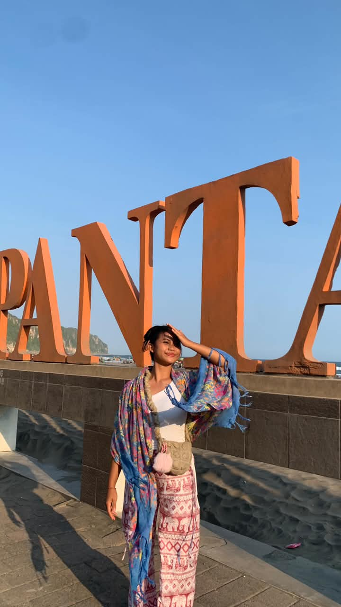
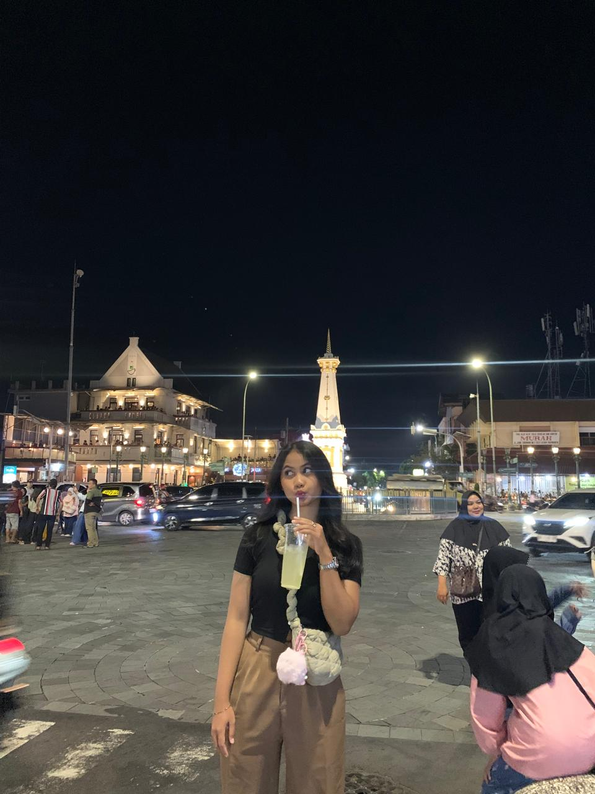
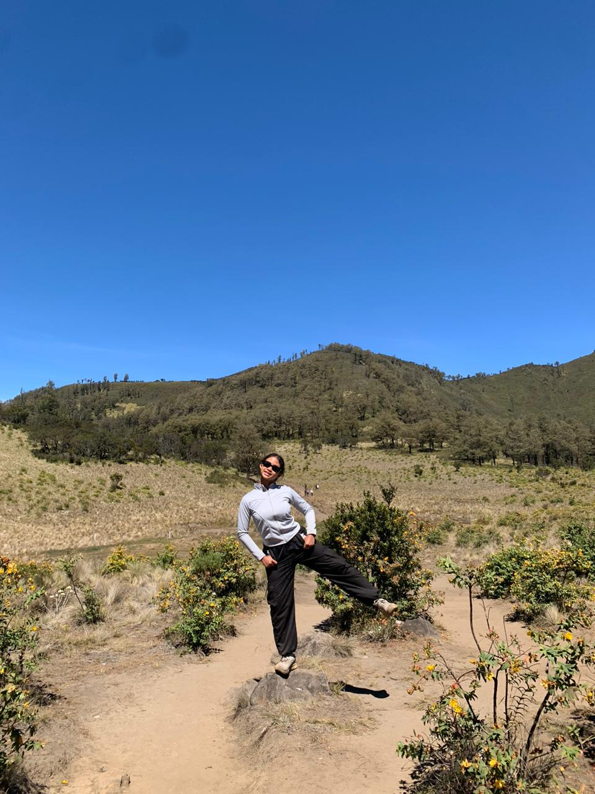
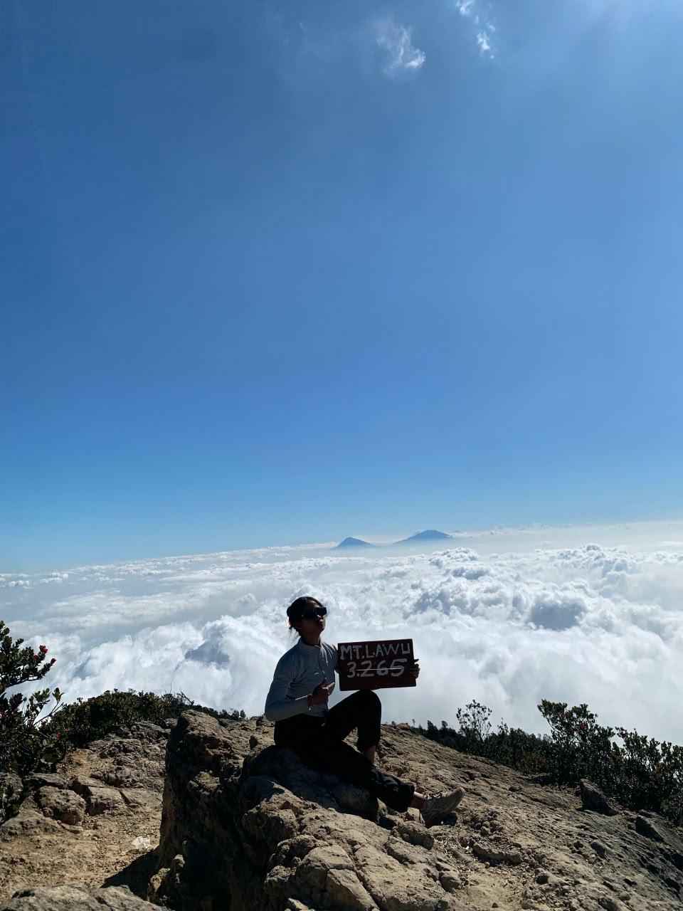
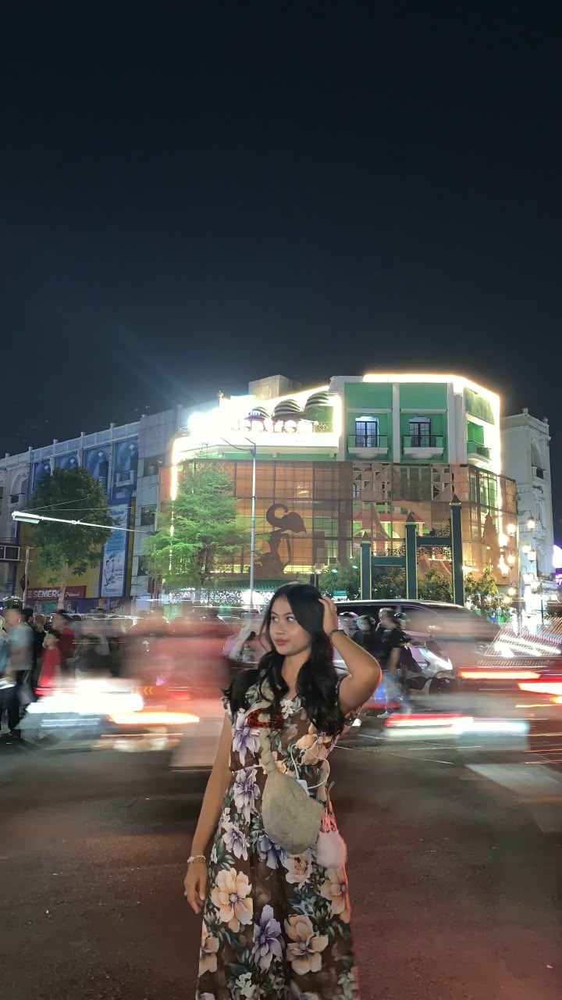

Liburan Saya
Kumpulan momen dari perjalanan yang paling berkesan.
Cerita Perjalanan
Pada liburan semester lalu, saya berkunjung ke beberapa tempat seperti Sekolah Lanjutan Advent Purwodadi yang berada di Jawa Timur, Yogyakarta, Solo. Bersama keluarga dan teman, perjalanan ini mengajarkan saya untuk menikmati hal sederhana: pemandangan, makanan khas, dan waktu bersama orang terdekat. Berikut sebagian foto yang paling saya ingat.
Galeri Foto







Visit my university: FTI UNAI
Follow my social media: Instagram